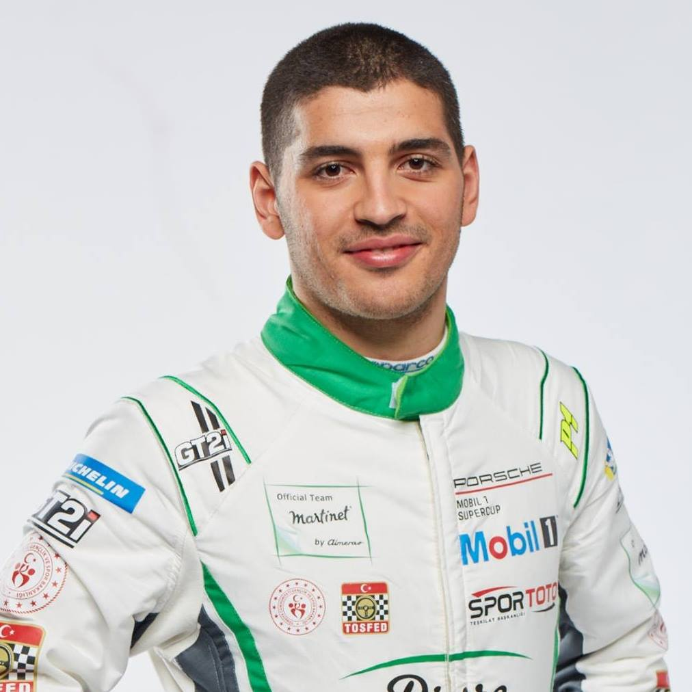
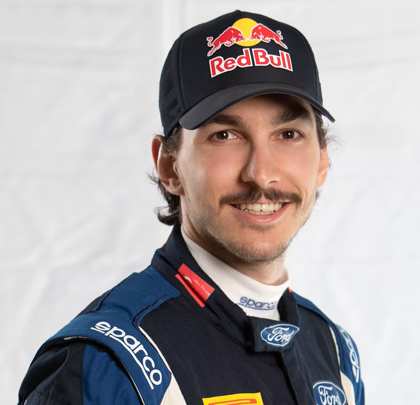
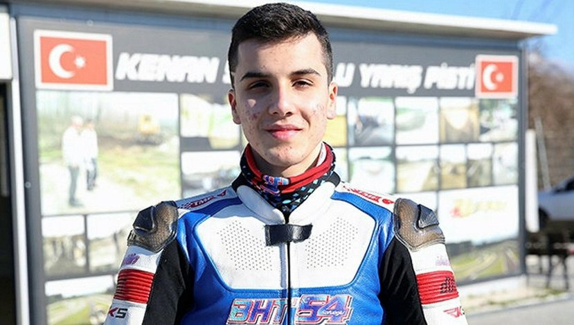
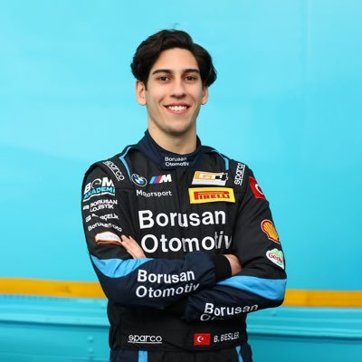
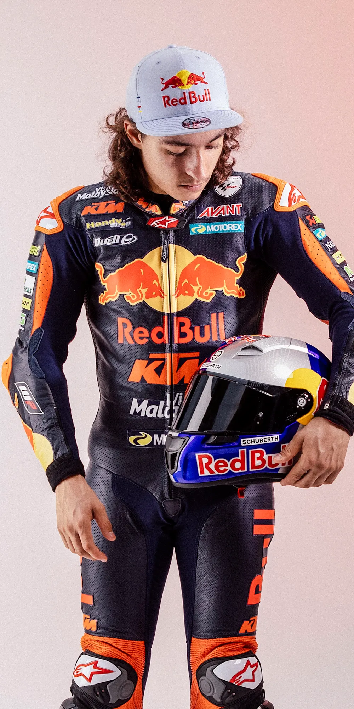
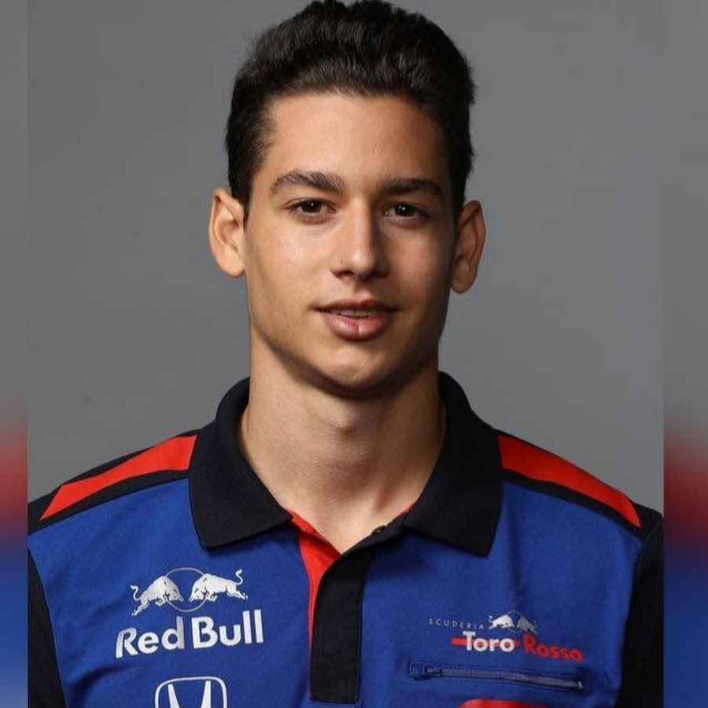
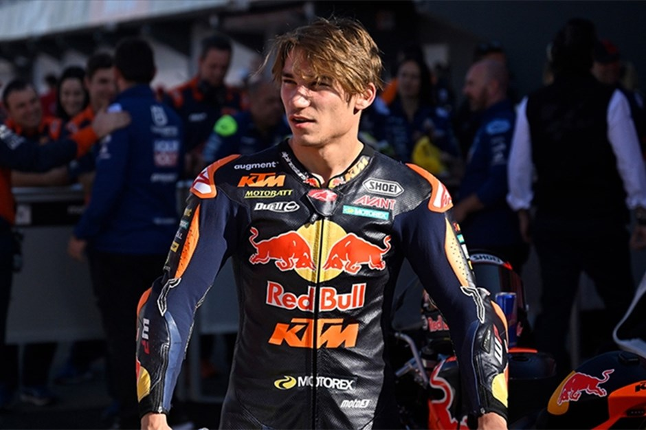
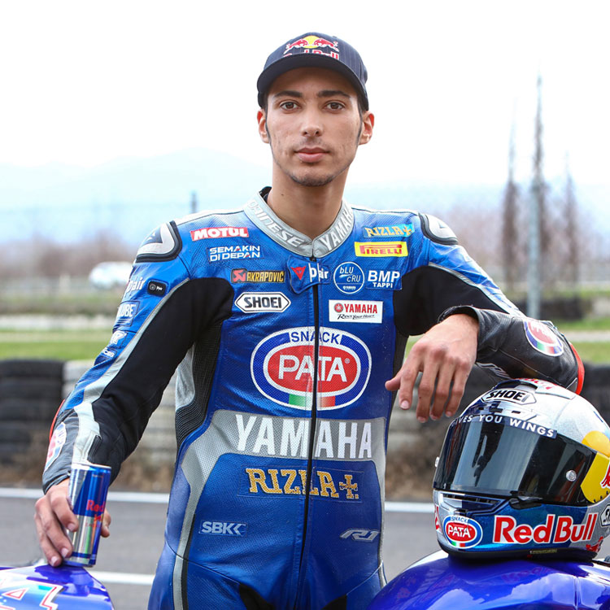
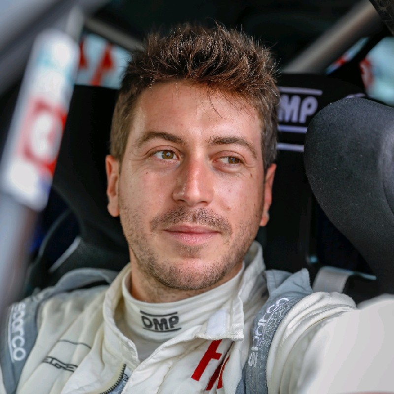

|  |
AYHANCAN GÜVEN |
Ayhancan Güven, Porsche fabrika takımında yer alan Türk millî yarış pilotudur. Aktif olarak ADAC GT Masters serisinde yarışmaktadır |
|  |
ALİ TÜRKKAN |
Ali Türkkan, Türk ralli pilotudur. 2021 yılında yardımcı pilot Burak Erdener'le birlikte Avrupa Ralli Kupası Gençler ve İki Çeker kategorilerinde şampiyonluk kazanmıştır ve 2023 yılında Dünya Ralli Şampiyonası WRC3 sınıfında yarışmaktadır. |
|  |
BAHATTİN SOFUOĞLU |
Bahattin Sofuoğlu, Türk motosiklet yarışçısı. Sinan ve Kenan Sofuoğlu'nun ağabeyidir. Bir motosiklet dükkânı sahibinin çocuğu olan Bahattin Sofuoğlu, motosiklet kariyerine 1997'de 19 yaşında motosiklet drag yarışlarına katılarak başlamıştır. |
|  |
BERKAY BESLER |
Berkay Besler, Porsche Supercup'ta uluslararası alanda yarışan bir Türk yarış pilotudur. 19 Şubat 1999'da Bursa'nın İnegöl ilçesinde doğdu. |
|  |
CAN ÖNCÜ |
Can Alexander Öncü, motosiklet yarışçısı. 2019 sezonunu Moto3'te geçirdikten sonra, 2020 için, eski Dünya Şampiyonu Kenan Sofuoğlu'nun önderliğinde yaptığı ve Pucetti Kawasaki ve Orelac Racing tarafından desteklenen yeni bir girişim olan Türk Yarış Ekibi ile Dünya Supersport'ta yarışmaya başladı |
|  |
CEM BÖLÜKBAŞI |
Cem Bölükbaşı Türk Formula 2, Formula 3, Formula 1 e-spor ve GT4 yarışçısı. Henüz 6 yaşındayken hız tutkusunu fark eden babası, onu motokros pistine götürdü. 5 yaşında motokros yarışmalarına katılmaya başladı. Cem Bölükbaşı I-Racing‘de 80.000 kişi içerisinden ilk 35’e girince dikkatleri üzerine çekti. |
|  |
DENİZ ÖNCÜ |
Deniz Öncü motosiklet yarışçısı. İkizi Can Öncü ile birlikte 2016-2017 Asya Yetenek Kupası'nda birlikte yarıştılar. Kenan Sofuoğlu'nun da desteğini verdiği sporcu Deniz Öncü 4 yaşından beri motor sürüyor. |

|
EMİR AŞARI |
Nürburgring Dayanıklılık Serisi'nde mücadele eden başarılı pilot Emir Aşarı, SP3T kategorisinde 2022 sezonunun şampiyonu oldu. |

|
SALİH YOLUÇ |
Salih Yoluç 38 yaşında Türk yarış pilotudur. Dünyaca ünlü Le Mans 24 Saat yarışını kazanmış ilk ve tek Türk pilotudur. |
|  |
TOPRAK RAZGATLIOĞLU |
Toprak Razgatlıoğlu, Superbike Dünya Şampiyonası'nda Yamaha adına yarışan Türk motosiklet yarışçısıdır. 2021 Superbike Dünya Şampiyonası'nı kazanıp Jonathan Rea'nın altı yıllık şampiyonluk serisini sona erdiren Razgatlıoğlu, Superbike tarihindeki ilk Türk dünya şampiyonu olmuştur. |
|  |
YİĞİT TİMUR |
Dünya Rallikros Şampiyonası RX Lites kategorisinde ilk kez yarışan Yiğit Timur, tamamen Türk mühendislerinin eseri Control 4 ile dördüncü oldu. |